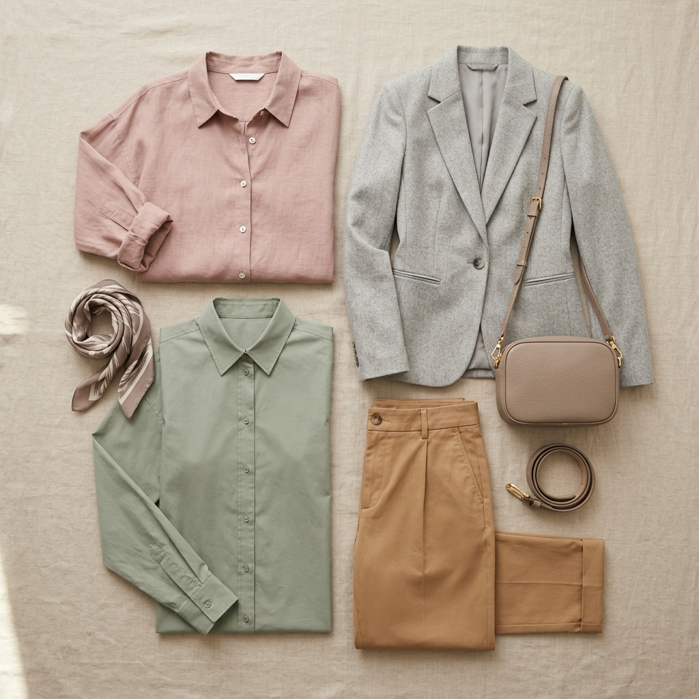

Last updated: July 14, 2026
Office Wear Colours That Actually Suit You
Quick answer: "Professional" colours don't have to be black and navy — they just need to be low-saturation and easy to combine. Every undertone has its own set of workplace-appropriate neutrals and one or two safe accent colours that read as polished without defaulting to the same two shades everyone else wears.

The Neutral Trap
Black and navy became the default office colours because they're safe, not because they're universally flattering. Black in particular can be harsh against fair-cool skin and can flatten deep-warm skin, making it a default rather than a genuinely good match for most people.
Better Neutrals, by Undertone
Warm undertone: camel, warm grey, chocolate brown, olive
Cool undertone: charcoal grey, true navy, soft white, plum-grey
Neutral undertone: taupe, stone, soft navy — both lists above are generally accessible
Adding One "Power Colour" Safely
A single well-matched colour — a blouse, a tie, a scarf — does more for a professional look than an entirely colourful outfit. Pick one shade from your undertone's palette (rust for warm, sapphire for cool, dusty rose for neutral) and reuse it as your signature accent across multiple outfits.
Building a Colour-Coordinated Work Capsule
Anchor your work wardrobe around 2 neutrals and 1-2 accent colours from your palette. This keeps every top able to pair with every bottom, which cuts decision fatigue in the morning while still looking considered rather than repetitive.
FAQ
Is black bad for everyone?
No — it genuinely suits high-contrast, cool, or deep complexions well. It's just not automatically flattering for everyone, which is why it shouldn't be the only neutral in a wardrobe.
What colours read best on video calls?
Solid, mid-saturation colours in your undertone generally read best on camera — very bright colours can overexpose, and very dark colours can lose detail against typical webcam lighting.
How many colours should a work capsule have?
Two neutrals and one or two accent colours is usually enough to mix and match a full week of outfits without repetition.
Want your exact office-ready palette? [Colourity can map it to your wardrobe →](https://colourity.com)